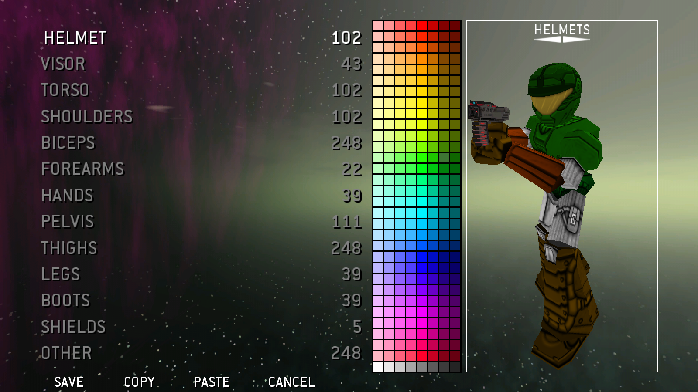
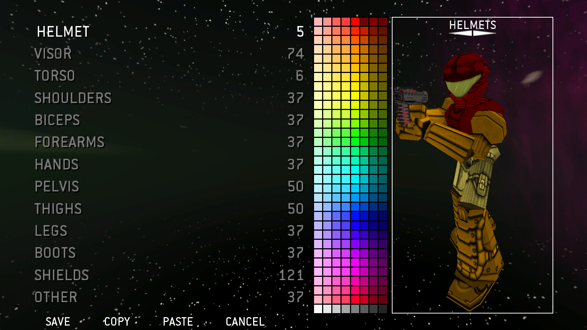
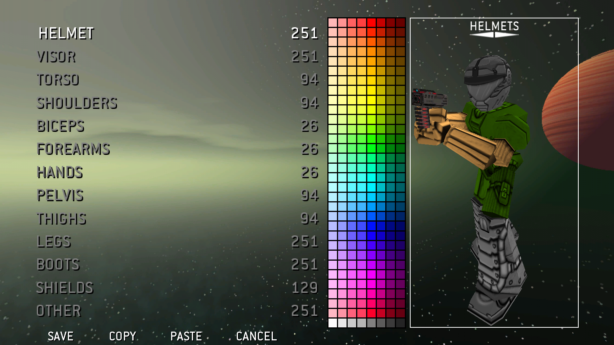
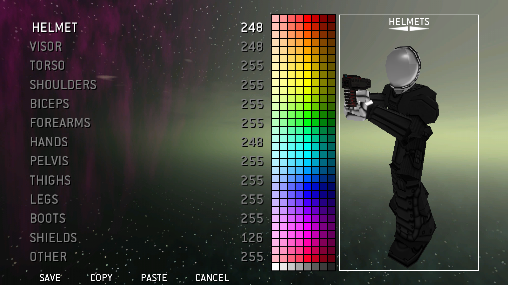
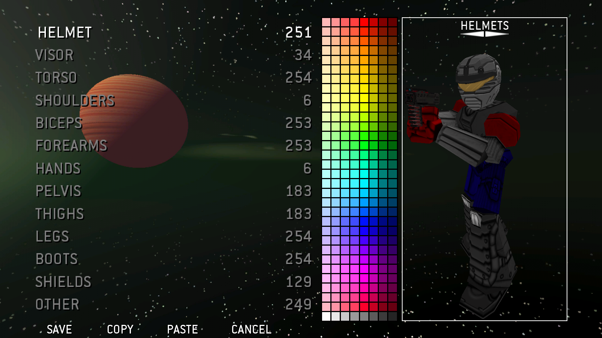
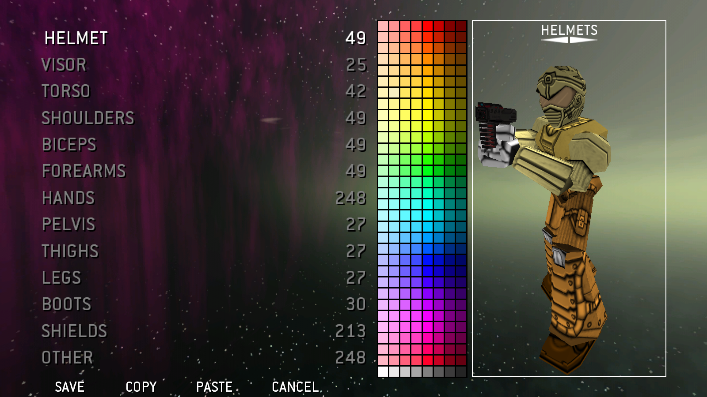
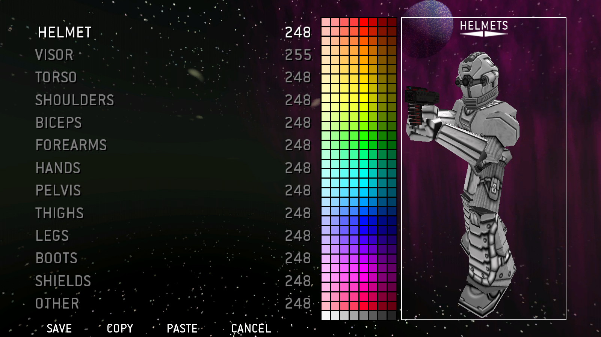

Armor Presets
Mario
Created by bigdaddy2
Based on "Mario" from the "Super Mario" series.

Luigi
Created by bigdaddy2
Based on "Luigi" from the "Super Mario" series.

Megaman
Created by bigdaddy2
Based on "Megaman" from the the "Megaman" series.

Mario (Outdated)
Created by Squeasy
Taken from the armor showcase in "Murder Mondays Ep: 1" Based on "Mario" from the "Super Mario" series.
 {Squeasy}.png)
Luigi (Outdated)
Created by Squeasy
Taken from the armor showcase in "Murder Mondays Ep: 1" Based on "Luigi" from the "Super Mario" series.
 {Squeasy}.png)
Link (Outdated)
Created by Squeasy
Taken from the armor showcase in "Murder Mondays Ep: 2" Based on "Link" from the "The Legend of Zelda" series.
 {Squeasy}.png)
Zelda
Created by Squeasy
Taken from the armor showcase in "Murder Mondays Ep: 2" Based on "Zelda" from the "The Legend of Zelda" series.

Samus (Outdated)
Created by Squeasy
Taken from the armor showcase in "Murder Mondays Ep: 3" Based on "Samus" from the "Metroid" series.
 {Squeasy}.png)
Spiderman
Created by Squeasy
Taken from the armor showcase in "Murder Mondays Ep: 4" Based on "Spiderman" from the "Spiderman" series.

Wolverine
Created by Squeasy
Taken from the armor showcase in "Murder Mondays Ep: 4" Based on "Wolverine" from the "Wolverine" series.

The Hulk (Outdated)
Created by Squeasy
Taken from the armor showcase in "Murder Mondays Ep: 5" Based on "The Hulk" from the "The Hulk" series.
 {Squeasy}.png)
Deadpool
Created by Squeasy
Taken from the armor showcase in "Murder Mondays Ep: 5" Based on "Deadpool" from the "Deadpool" series.

Isaac Clarke
Created by Squeasy
Taken from the armor showcase in "Murder Mondays Ep: 6" Based on the "Dead Space" series.

Iron Man (Outdated)
Created by DBD Variant
Taken from the armor showcase in "Murder Mondays Ep: 7" Based on "Iron Man" from the "Iron Man" series.
 {DBD Variant}.png)
Link
Created by ????
Taken from the armor showcase in "Murder Mondays Ep: 8" Based on "Link" from the "The Legend of Zelda" series.
Captain Falcon
Created by ????
Taken from the armor showcase in "Murder Mondays Ep: 8" Based on "Captain Falcon" from the "F-Zero" series.

Samus
Created by ????
Taken from the armor showcase in "Murder Mondays Ep: 8" Based on "Samus" from the "Metroid" series.
Mario (Outdated)
Created by ????
Taken from the armor showcase in "Murder Mondays Ep: 8" Based on "Mario" from the "Super Mario" series.
 2.png)
Doomguy
Created by ????
Taken from the armor showcase in "Murder Mondays Ep: 9" Based on "Doomguy" from the "Doom" series.
Duke Nukem
Created by ????
Taken from the armor showcase in "Murder Mondays Ep: 9" Based on "Duke Nukem" from the "Duke Nukem" series.

Bigbanggalaxy
Created by Bigbanggalaxy
Taken from the armor showcase in "Murder Mondays Ep: 10" This is a custom made armor set used by Bigbanggalaxy.

Pin / xxCrazyKieranxx
Created by Pin
Taken from the armor showcase in "Murder Mondays Ep: 10" This is a custom made armor set used by Pin.

Squeasy / xEasyTargetx
Created by Squeasy
Taken from the armor showcase in "Murder Mondays Ep: 10" This is a custom made armor set that used to be used by Squeasy.
 {Squeasy}.png)
Ex2x
Created by Ex2x
Taken from the armor showcase in "Murder Mondays Ep: 10" This is a custom made armor set used by Ex2x.

Ex2x (Non Majora Version)
Created by Ex2x
A version of the colors Ex2x uses but using the 3Slits helmet as the majoras mask uses the same texture.
 {Ex2x}.png)
Prologue
Created by -Prologue-
Taken from the armor showcase in "Murder Mondays Ep: 10" This is a custom made armor set used by -Prologue-.

Supascury
Created by Supascury
Taken from the armor showcase in "Murder Mondays Ep: 10" This is a custom made armor set used by Supascury.

Slenderman
Created by ????
Taken from the armor showcase in "Murder Mondays Ep: 666 (11)" Based on the "Slenderman".
Captain America
Created by ????
Taken from the armor showcase in "Murder Mondays Ep: 12" Based on "Captain America" from the "Captain America" series.

The Hulk
Created by ????
Taken from the armor showcase in "Murder Mondays Ep: 12" Based on "The Hulk" from "The Hulk" series.

Iron Man
Created by ????
Taken from the armor showcase in "Murder Mondays Ep: 12" Based on "Iron Man" from the "Iron Man" series.

Thor
Created by ????
Taken from the armor showcase in "Murder Mondays Ep: 12" Based on "Thor" from the "Thor" series.
Minecraft Steve
Created by Polybox
Taken from the armor showcase in "Murder Mondays Ep: 13" Based on "Steve" from "Minecraft".

Minecraft Zombie
Created by Polybox
Taken from the armor showcase in "Murder Mondays Ep: 13" Based on the "Zombie" from "Minecraft".

Rebel
Created by ????
Taken from the armor showcase in "Murder Mondays Ep: 14" Based on a rebel from the "Star Wars" series.
Stormtrooper
Created by ????
Taken from the armor showcase in "Murder Mondays Ep: 14" Based on the "Stormtrooper" from the "Star Wars" series.
Megaman (Alt Version)
Created by Double Bullet
Taken from the armor showcase in "Murder Mondays Ep: 15" Based on "Megaman" from the "Megaman" series.
 {Double Bullet}.png)
Plug Man
Created by ???
Taken from the armor showcase in "Murder Mondays Ep: 15" Based on "Plug Man" from the "Megaman" series.

Crackhead
Created by Potato Man
Based "On the crackhead down the street".

Christmas Skin
Created by Calypso
This is a custom made armor set used by Calypso.

Christmas Skin (Non Majora Version)
Created by Calypso
A version of the "Christmas Skin" uses but using the 3Slits helmet instead as the majoras mask uses the same texture.
 {Calypso}.png)
Blear
Created by Blear
This is a custom made armor set used by Blear.

Frosty
Created by Blear
Based on Blears OC Dragon "Frosty".

Woody
Created by bigdaddy2
Used in "Murder Mondays Ep: 17" Based on "Woody" from "Toy Story".

Employee
Created by Bartley
Used in the Murder Miners universe "Learn to Jump" as a uniform by the Czerka Corporation faction.

Office Woker
Created by CowboyChief / SQ
Based on an office worker.

Office Woker (Alt Version)
Created by CowboyChief / SQ
Based on an office worker.
 {CowboyChief-SQ}.png)
Office Woker (Alt Version)
Created by CowboyChief / SQ
Based on an office worker.
 {CowboyChief-SQ}.png)
Pink Guy
Created by CowboyChief / SQ
Based on "Pink Guy" from "Filthy Frank".

Crime Police Gamer
Created by Brazen Lizard
The Main character from the "Crime Police" Video.

Bad Man Ting
Created by Smams
The Criminal in the "Crime Police" Video.

JForce Ty
Created by JForce Ty
This is a custom made armor set used by Ty.
*Shield color is currently unknown*

Jonny (JForce R00k)
Created by Jonny
This is a custom made armor set used by Jonny.
*Shield color is currently unknown*
 {Jonny}.png)
JForce Ato
Created by JForce Ato
This is a custom made armor set used by Jeremy.
*Shield color is currently unknown*

Double Bullet
Created by Double Bullet
This is a custom made armor set used by Double Bullet.

Double Bullet (Non Majora Version)
Created by Double Bullet
A version of the colors Double Bullet uses but using the 3Slits helmet as the majoras mask uses the same texture.
 {Double Bullet}.png)
Darth Escar
Created by Darth Escar
This is a custom made armor set used by Darth Escar.